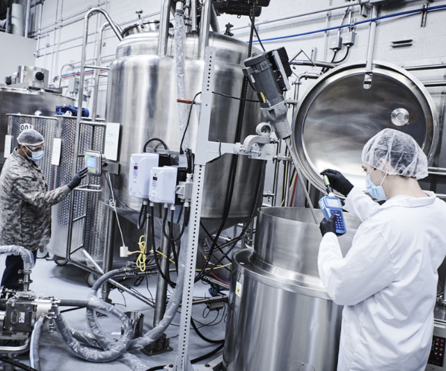

Filtrer par catégorie
 Skincare
SkincareFormulation soins visage & anti-âge
Conception et optimisation de crèmes et sérums hydratants/anti-âge : sélection des actifs, stabilité de l'émulsion et sensorialité de la texture.
 Sun Care
Sun CareFormulation protection solaire
Développement de produits solaires combinant filtres UV organiques et minéraux, avec optimisation du SPF, de l'étalement et de la résistance à l'eau.
Shampoings & après-shampoings
Développement de systèmes nettoyants doux à base de tensioactifs sélectionnés, avec agents conditionneurs pour la sensorialité capillaire.
Fonds de teint, gloss & mascaras
Formulation de produits de couleur avec dispersion des pigments, tenue, et compatibilité avec les systèmes émulsionnés ou anhydres.

IndustrialisationAccompagnement scale-up industriel
Accompagnement de fabricants dans le passage de l'échelle laboratoire à l'échelle industrielle, avec adaptation des formules aux contraintes de production.
 R&D
R&DDégradation Electro-Fenton de la tétracycline
Projet de fin d'études (SIPHAT) : étude d'un procédé d'oxydation avancée pour dégrader l'hydrochlorure de tétracycline en solution.
* Chiffres estimatifs à confirmer avec Hajer avant publication.